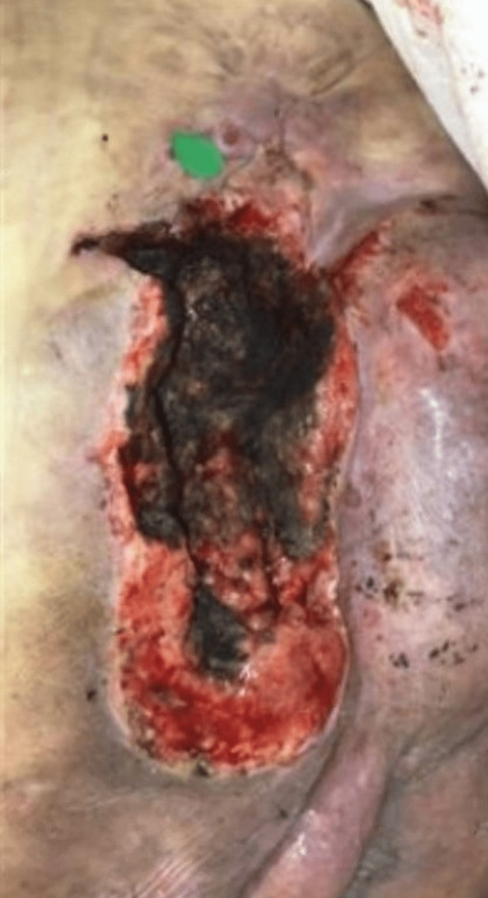
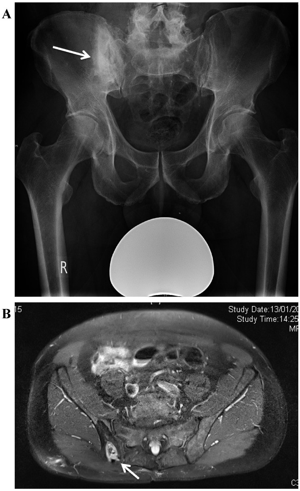
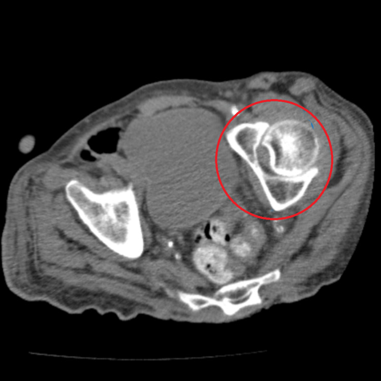

309 — Loét tì đè & viêm xương tủy vùng khung chậu ở người lớn spina bifida / Pressure injuries and pelvic osteomyelitis in adults with spina bifida
Tags: pattern:loet-ti-de pattern:viem-xuong-tuy vung:khung-chau vung:da-mo-mem score:NPUAP-EPUAP score:Cierny-Mader protocol:MRI-khung-chau anatomy:spina-bifida
Mức chắc chắn (certainty): tổng hợp y văn (literature synthesis) — hệ thống chẩn đoán viêm xương tủy dưới loét + cohort phẫu thuật khung chậu + cohort tái phát sau vạt; số liệu gắn PMCID, ảnh CC ghi giấy phép từng file.
1. Tổng quan bệnh học – cơ chế hình ảnh
- Người lớn spina bifida (SB) không còn là “bệnh nhi”: tùy mức tổn thương thần kinh, chỉ 17–61% người bệnh sống tới 40 tuổi (Eriks-Hoogland I và cs, Front Rehabil Sci 2024;5:1371556, PMC11417090). Da là cơ quan bị bỏ quên nhiều nhất: trong chương trình chuyển tiếp, 31% báo có vấn đề da (bài 673).
- Cơ chế loét: mất cảm giác + liệt + ngồi/nằm lâu + biến dạng khung chậu + lực cắt (shear) → thiếu máu cục bộ tại ụ ngồi (ischial tuberosity), xương cùng (sacrum), mấu chuyển lớn (greater trochanter). Ụ ngồi là vị trí chịu lực lớn nhất khi ngồi xe lăn; đây cũng là nơi tái phát nhiều nhất.
- Từ loét đến viêm xương tủy: vi khuẩn từ ổ loét lan liên tục (contiguous) vào xương. Đây là viêm xương tủy đa vi khuẩn: trong loạt 61 người lớn mổ viêm xương tủy khung chậu, 52,5% cấy ra ≥ 2 loài; ụ ngồi là vị trí thường gặp nhất; phân loại Cierny–Mader: type II 19, type III 35, type IV 7 (Dudareva M và cs, J Bone Jt Infect 2017;2(4):184-193, PMC5671931).
- Tần suất viêm xương tủy dưới loét stage 3–4 rất dao động: tổng quan hệ thống 6 nghiên cứu (1986–2016) ghi nhận 17–86%, đa số khoảng 20% — tức là không thể “đoán” theo lâm sàng, phải có bằng chứng mô học (Chicco M và cs, J Bone Jt Infect 2020;6:21-32, PMC7517666).
- TẠI SAO hình ảnh thay đổi — vật lý & mô học:
- MRI: phù tủy xương do viêm → T2/STIR tăng tín hiệu, T1 giảm tín hiệu, ngấm thuốc sau tiêm; ổ hoại tử/xương chết (sequestrum) không ngấm; đường rò (sinus tract) ngấm thuốc lan từ da vào xương là dấu hiệu mạnh. Nhưng lực tì đè mạn tính tự nó gây phù tủy và xơ hóa phản ứng → dương tính giả, nhất là ở vùng ụ ngồi.
- CT: thấy phá hủy vỏ xương, xơ hóa, mảnh xương chết, khí trong mô mềm; tốt hơn MRI để đánh giá vỏ xương và lập kế hoạch cắt xương, nhưng kém nhạy với tủy xương viêm sớm.
- X-quang: thường âm sớm; chỉ thấy phá hủy khi bệnh đã tiến triển — không dùng để loại trừ.
- Xét nghiệm: CRP/ESR hỗ trợ theo dõi, không đủ chẩn đoán; cấy mô nông phản ánh hệ vi khuẩn bề mặt, không phải xương.
- Hiệu suất của các phương thức so với “chuẩn vàng” mô học xương (PMC7517666):
- Khám lâm sàng: độ nhạy 22–33%, độ đặc hiệu 60–79%.
- MRI: độ nhạy 0–94%, độ đặc hiệu 22–25% (hai nghiên cứu, cỡ mẫu nhỏ).
- X-quang/CT: đặc hiệu cao nhưng độ nhạy thấp.
- Xạ hình xương: độ nhạy 64–100%, độ đặc hiệu 0–57%.
- Cấy xương: độ nhạy cao, độ đặc hiệu thấp do nhiễm bẩn.
- Kết luận của tổng quan: không phương thức nào đủ tin cậy — sinh thiết xương + mô học vẫn là chuẩn vàng.
- Hệ quả lâm sàng của “MRI dương tính giả”: trong 73 vạt ở 41 bệnh nhân, giá trị tiên đoán dương của MRI chỉ 84,6% và giá trị tiên đoán âm 16,7%; có/không viêm xương tủy trên cấy xương không làm khác thời gian lành hay tỷ lệ biến chứng (McCarthy J và cs, Plast Reconstr Surg Glob Open 2017;5:e1263, PMC5404448). Nghĩa là: MRI không được dùng một mình để quyết định cắt xương.

Loét tì đè vùng mông trái ở bệnh nhân spina bifida kèm đái tháo đường và béo phì: ổ loét 18,26 × 8,22 × 7 cm, đáy phủ vảy hoại tử đen (eschar) che mất độ sâu → không phân độ được (unstageable) cho đến khi cắt lọc. Nguồn: Bruzzese GL, McKenna S, Cureus 2023;15(8):e43470 (PMC10425705), Fig. 1, CC BY 3.0 — ảnh nguyên bản.2. Mẫu hình + chẩn đoán phân biệt theo vị trí (gamut)
- Theo vị trí tì đè:
- Xương cùng: hay gặp ở người nằm; loét rộng, dễ thông vào ống sống → áp-xe ngoài màng cứng (biến chứng thần kinh cấp cứu).
- Ụ ngồi: hay gặp ở người ngồi xe lăn; tái phát cao nhất sau vạt (OR 3,67 so với vị trí khác — Selsjord AR và cs, Int Wound J 2025;22:e70211, PMC11999728).
- Mấu chuyển lớn: loét do nằm nghiêng; dễ nhầm viêm bao hoạt dịch mấu chuyển (trochanteric bursitis).
- Gót chân, chẩm, vai: loét do nằm; thường bị bỏ sót khi chỉ khám vùng cùng cụt.
- Theo mẫu hình tổn thương:
- Loét đơn thuần chưa viêm xương: đáy mô hạt, không lộ xương, không mùi, CRP nhẹ.
- Loét + viêm xương tủy: lộ xương, chảy mủ kéo dài, đường rò, xương sờ thấy; MRI/CT phá hủy xương.
- Loét + ung thư biểu mô vảy (Marjolin): loét lâu năm, bờ cứng lồi, đau tăng, chảy máu — sinh thiết mọi ổ loét không lành sau 4–8 tuần.
- Loét + bệnh da viêm: pyoderma gangrenosum (bờ tím, đau, lan nhanh), viêm mạch, lao da.
- Loét + rò dịch não tủy: ở người có myelomeningocele đã vá — dịch trong, dấu “halo”, tăng khi gắng sức; dễ bị chẩn đoán nhầm là loét tì đè (Taylor EM và cs, Eplasty 2013;13:ic62, PMC3827833).
- Loét + cốt hóa lạc chỗ (heterotopic ossification): khối xương trong mô mềm quanh khớp háng, có thể loét da trên khối xương.
- Mnemonic vị trí “SITA”: Sacrum – Ischium – Trochanter – Ankle/heel (cùng cụt – ụ ngồi – mấu chuyển – gót).
3. Bảng so sánh phân biệt (ma trận đối chiếu)
| Thực thể (entity) | Hình ảnh/lâm sàng điển hình | Chốt vào (rule-in) | Chốt loại (rule-out) | Gợi ý xác nhận |
|---|---|---|---|---|
| Loét stage 3–4 KHÔNG viêm xương | Loét sâu tới mô dưới da/cơ, đáy mô hạt, không lộ xương | Đáy sạch, mô hạt, không lộ xương, CRP thấp | Lộ xương + chảy mủ + đường rò → phải loại viêm xương | Thăm dò bằng que (probe-to-bone) + MRI/CT |
| Viêm xương tủy dưới loét | Lộ xương, mủ, rò; MRI phù tủy + ngấm, CT phá hủy vỏ | Mô học xương có viêm + cấy xương dương | MRI bình thường + không lộ xương + CRP thấp → ít nghĩ viêm xương | Sinh thiết xương (mô học + cấy), không chỉ cấy mô nông |
| Ung thư biểu mô vảy (Marjolin) | Loét > 10 năm, bờ cứng lồi, đau, chảy máu; hủy xương | Sinh thiết da/mô mềm có tế bào ác | Sinh thiết âm + loét lành sau cắt lọc → loại | Sinh thiết nhiều điểm, CT/MRI đánh giá xâm lấn |
| Pyoderma gangrenosum | Bờ tím, đau nhiều, lan nhanh, không nhiễm khuẩn | Bờ tím đặc trưng + đáp ứng corticoid | Cấy mủ + sốt + phá hủy xương → nghĩ nhiễm trùng | Sinh thiết loại trừ nhiễm trùng/ác; hội chẩn da liễu |
| Lao da/xương | Loét mạn, bờ nham nhở, có thể lao xương khung chậu | AFB/PCR dương + hình ảnh hủy xương | PCR âm + cấy thường dương → loại | Sinh thiết + PCR lao |
| Rò dịch não tủy (sau vá MMC) | Dịch trong, dấu halo, tăng khi gắng sức, không mủ | Beta-2 transferrin dương | Dịch đục/mủ + cấy dương → loại | Beta-2 transferrin, CT/MRI định vị |
| Viêm bao hoạt dịch mấu chuyển | Đau mấu chuyển, sưng khu trú, không loét sâu | Sưng/đau khu trú + MRI dịch quanh gân, xương nguyên | Phá hủy xương trên CT → viêm xương | Siêu âm + MRI; chọc hút |
| Cốt hóa lạc chỗ | Khối cứng trong cơ, hạn chế vận động; X-quang có xương trưởng thành | Xương có vỏ/vân trong mô mềm, tách khỏi xương chính | Phá hủy vỏ xương liên tục → nghĩ viêm xương/u | X-quang/CT; ALP; MRI khi chưa rõ |
Ảnh chốt: phá hủy xương do viêm xương tủy

*(A) X-quang khung chậu: ổ khuyết xương (lucency) ở cánh xương chậu phải với xơ hóa quanh (involucrum), mũi tên trắng. (B) MRI axial: phá hủy xương, ổ xương chết trung tâm và đường rò ngấm thuốc ra da vùng mông (mũi tên). Bệnh cảnh: người liệt hai chi dưới, viêm xương tủy khung chậu mạn — cùng cơ chế với người lớn spina bifida. Nguồn: Dudareva M và cs, J Bone Jt Infect 2017;2(4):184-193 (PMC5671931), Fig. 3 A–B, CC BY-NC 4.0 — giữ nguyên bản.*
CT axial không cản quang: vùng ly giải xen xơ hóa (lytic–sclerotic) ở cánh xương chậu trái (khoanh đỏ), kèm dày mô mềm và thay đổi quanh xương — hình ảnh viêm xương tủy mạn tính. Đây là kiểu tổn thương mà X-quang thường bỏ sót. Nguồn: Tetoff T, Kaur J, Zambrano C, Cureus 2026;18(6):e111080 (PMC13380024), Fig. 4, CC BY 4.0 — ảnh nguyên bản.4. Protocol chụp + hệ phân độ/điểm chuẩn hóa
4.1 Trình tự chẩn đoán
- Bước 1 — lâm sàng: đo kích thước, độ sâu, đáy ổ loét; thăm dò bằng que (probe-to-bone); tìm lộ xương, mùi, đường rò; khám toàn bộ da (gót, chẩm, vai); đánh giá dinh dưỡng (albumin, prealbumin), đường huyết.
- Bước 2 — xét nghiệm: CRP, ESR, công thức máu; cấy máu nếu sốt; không dùng cấy mô nông để chẩn đoán viêm xương.
- Bước 3 — hình ảnh:
- MRI khung chậu có gadolinium + fat-sat (T1, T2/STIR, T1 sau tiêm): phù tủy, ngấm thuốc, đường rò, áp-xe mô mềm, lan vào ống sống.
- CT không cản quang lát mỏng: phá hủy vỏ xương, xương chết, khí; dùng khi MRI chống chỉ định hoặc để lập kế hoạch cắt xương.
- X-quang chỉ để có nền, không loại trừ.
- Bước 4 — chuẩn vàng: sinh thiết xương qua đường loét hoặc qua da, lấy nhiều mẫu cho mô học + cấy kỵ khí + nấm + lao; nếu có thể ngừng kháng sinh 2 tuần trước lấy mẫu (theo tổng quan PMC7517666, chỉ 1/6 nghiên cứu tuân thủ điều kiện này).
4.2 Phân độ phải nhớ
- Phân độ loét NPUAP/EPUAP 2019: stage 1 — da nguyên vẹn, đỏ không mất màu; stage 2 — mất một phần lớp bì, đáy hồng/ẩm; stage 3 — mất toàn bộ lớp dày, thấy mỡ, chưa lộ xương/gân/cơ; stage 4 — lộ xương, gân, cơ, sụn; unstageable — bị che bởi vảy hoại tử/slough; deep tissue pressure injury — đỏ/tím sẫm không mất màu, da còn nguyên.
- Cierny–Mader: type I tủy xương, II bề mặt, III khu trú, IV lan tỏa; kèm host A/B/C (A = lành mạnh, B = suy giảm, C = không chịu được mổ). Loạt 61 ca: II 19, III 35, IV 7; 30 ca cần vạt che phủ (PMC5671931).
- Kết cục phẫu thuật: trong loạt 61 người lớn, tái phát 11,5% (trung bình 1,5 năm, 92 ngày–5,3 năm), 12 ca tử vong trong theo dõi (PMC5671931). Sau vạt ở người SCI, tái phát 46% (25/54); yếu tố tăng: xe lăn cơ (OR 3,9), vạt ở ụ ngồi (OR 3,67); yếu tố giảm: theo dõi tại đơn vị tủy sống (OR 0,28), có trợ lý chăm sóc (OR 0,15) (PMC11999728). Loét ụ ngồi tái phát chung 15–30% (PMC13320726).
4.3 Nguyên tắc điều trị
- Kiểm soát nhiễm trùng + cắt lọc triệt để: cắt da, mô dưới da, cơ hoại tử và xương đến khi còn chảy máu; cắt ụ ngồi (ischiectomy) khi xương viêm không hồi phục; để lại mô mềm khỏe.
- Che phủ bằng vạt: vạt cơ/musculocutaneous hoặc vạt xuyên nhánh (perforator flap) — mấu chuyển (SGAP), vạt cơ mông, vạt keystone; đặt dẫn lưu kín, tránh đè lên vạt.
- Bổ trợ: xi măng xương mang kháng sinh (vancomycin/tobramycin) cho ổ xương rộng, NPWT khi nhiễm chưa kiểm soát, kháng sinh theo cấy xương (không theo cấy mô nông).
- Phòng ngừa tái phát là điều trị bắt buộc: bản đồ áp lực (pressure mapping), thay đổi tư thế, nệm/đệm phù hợp, kiểm soát co cứng, dinh dưỡng, tái khám tại đơn vị tủy sống.
flowchart TD
A[Loét tì đè vùng khung chậu ở người spina bifida] --> B[Phân độ NPUAP/EPUAP + đo kích thước + thăm dò xương]
B --> C{Có lộ xương, rò mủ hoặc probe-to-bone dương?}
C -->|Không| D[Chăm sóc vết thương, giảm áp lực, dinh dưỡng, theo dõi 2-4 tuần]
D --> E{Không lành hoặc xấu đi?}
E -->|Có| F[MRI khung chậu có gadolinium + fat-sat, CT xương]
E -->|Không| G[Tiếp tục phòng ngừa và tái khám]
C -->|Có| F
F --> H{Nghi viêm xương tủy?}
H -->|Có| I[Sinh thiết xương: mô học + cấy kỵ khí, nấm, lao]
I --> J{Cierny-Mader + tình trạng host}
J --> K[Cắt lọc triệt để, cắt xương chết hoặc ischiectomy]
K --> L[Che phủ bằng vạt cơ hoặc vạt xuyên nhánh + dẫn lưu]
L --> M[Kháng sinh theo cấy xương + phòng ngừa tái phát]
H -->|Không| N[Sinh thiết mô mềm loại trừ Marjolin và bệnh da viêm]
N --> D
5. Biến thể bình thường và cạm bẫy
- MRI dương tính không bằng viêm xương: phù tủy do tì đè/xơ hóa phản ứng rất thường gặp ở stage 4; PPV 84,6%, NPV 16,7% trong loạt vạt (PMC5404448) → không cắt xương chỉ vì MRI.
- MRI âm tính không loại trừ viêm xương khi đã có lộ xương/rò mủ; độ nhạy trong y văn dao động 0–94% (PMC7517666) — quyết định dựa trên mô học + cấy xương.
- Cấy mô nông luôn “dương” do hệ vi khuẩn bề mặt; chỉ cấy xương sâu mới định hướng kháng sinh.
- Ổ loét nhỏ ngoài da, hang lớn dưới da: không đánh giá độ sâu bằng mắt; cần thăm dò và MRI/CT.
- Bỏ sót ung thư biểu mô vảy (Marjolin) ở loét > 10 năm: loét “không lành” phải sinh thiết, kể cả khi MRI chỉ thấy viêm.
- Rò dịch não tủy giả loét ở người đã vá myelomeningocele: dịch trong, dấu halo, tăng khi ho/gắng sức — hỏi tiền sử, beta-2 transferrin (PMC3827833).
- Áp-xe ngoài màng cứng là biến chứng của loét cùng cụt sâu: đau lưng, sốt, yếu chi mới → MRI toàn bộ cột sống cấp, không chờ.
- “Unstageable” không phải stage 4: chỉ phân độ sau khi cắt lọc đủ để thấy đáy; ghi sai độ sâu sẽ sai kế hoạch mổ.
- Cốt hóa lạc chỗ và thay đổi sau mổ có thể giả u/tái phát trên X-quang — đối chiếu CT/MRI và so phim cũ.
6. Tự lượng giá — Blind Quiz
Ca 1 — Nam 34 tuổi, spina bifida, ngồi xe lăn, nhập viện vì sốt và chảy mủ vùng mông trái. Vùng loét không đau.
- Hỏi: mô tả tổn thương? Vì sao không phân độ được? Hai biến chứng phải loại trừ?
Bấm để hiện đáp án (findings + chẩn đoán)
- Findings: ổ loét lớn vùng mông trái (18,26 × 8,22 × 7 cm), đáy phủ vảy hoại tử đen, viền da đỏ/macerated; không đau do mất cảm giác.
- Vì sao không phân độ được: đáy bị eschar/slough che — chỉ phân độ sau khi cắt lọc; trên thực tế tổn thương đã tới xương (stage 4).
- Biến chứng phải loại trừ: viêm xương tủy khung chậu (lộ xương, mủ, rò) và nhiễm khuẩn huyết/áp-xe vùng chậu; ở loét cùng cụt sâu còn phải loại áp-xe ngoài màng cứng.
- Bước tiếp theo: CRP/ESR, cấy máu, MRI khung chậu có gadolinium + fat-sat, sinh thiết xương khi nghi viêm xương.
- Nguồn ảnh: Bruzzese GL, McKenna S, Cureus 2023;15(8):e43470 (PMC10425705), Fig. 1, CC BY 3.0.
Ca 2 — Bệnh nhân liệt hai chi dưới, loét tì đè mạn vùng mông phải, chảy mủ tái diễn nhiều năm. Xem X-quang và MRI.
- Hỏi: dấu hiệu trên X-quang? MRI bổ sung gì? Vì sao không thể chẩn đoán chỉ bằng hình ảnh?
Bấm để hiện đáp án (findings + chẩn đoán)
- X-quang (A): ổ khuyết xương (lucency) ở cánh chậu phải với xơ hóa quanh (involucrum) — dấu hiệu viêm xương tủy mạn.
- MRI (B): phá hủy xương, ổ xương chết trung tâm, đường rò ngấm thuốc từ xương ra da vùng mông.
- Chẩn đoán: viêm xương tủy khung chậu mạn do loét tì đè (lan liên tục).
- Vì sao không chỉ dựa hình ảnh: MRI có thể dương tính giả do phù tủy tì đè; mô học + cấy xương mới xác nhận và định hướng kháng sinh.
- Nguồn ảnh: Dudareva M và cs, J Bone Jt Infect 2017;2(4):184-193 (PMC5671931), Fig. 3 A–B, CC BY-NC 4.0.
Ca 3 — Bệnh nhân lớn tuổi, loét cùng cụt sâu, sốt; CT bụng–chậu không cản quang được chỉ định vì không làm được MRI.
- Hỏi: mô tả tổn thương xương? CT mạnh/yếu gì so với MRI? Cần làm gì để chốt?
Bấm để hiện đáp án (findings + chẩn đoán)
- Findings: vùng ly giải xen xơ hóa ở cánh chậu trái (khoanh đỏ), bờ không đều, kèm dày mô mềm quanh xương.
- Chẩn đoán: viêm xương tủy khung chậu (gợi ý mạn tính do xơ hóa); cần loại trừ ác tính nếu bờ phá hủy rộng.
- CT mạnh: vỏ xương, mảnh xương chết, khí, lập kế hoạch cắt xương; CT yếu: tủy xương viêm sớm, đường rò, áp-xe mô mềm.
- Để chốt: sinh thiết xương (mô học + cấy), CRP/ESR, cấy máu; nếu MRI không làm được, CT là lựa chọn thay thế hợp lý.
- Nguồn ảnh: Tetoff T, Kaur J, Zambrano C, Cureus 2026;18(6):e111080 (PMC13380024), Fig. 4, CC BY 4.0.
Bài liên quan chéo
- 300 – Tổng quan hệ Cơ xương khớp
- 673 – Chuyển tiếp sang người lớn ở spina bifida & bàng quang thần kinh
- 677 – Chăm sóc & biến chứng ống dẫn lưu trên xương mu ở trẻ
- 671 – Nhiễm trùng tiểu & viêm thận–bể thận ở trẻ có bàng quang thần kinh
- 672 – Biến chứng muộn sau tái tạo bàng quang bằng ruột
Ảnh
images/309_loet-ti-de_Anh-PMC10425705-F1.jpg— loét tì đè spina bifida, CC BY 3.0.images/309_viem-xuong-tuy_MRI-PMC5671931-F3.jpg— X-quang + MRI viêm xương tủy, CC BY-NC 4.0.images/309_viem-xuong-tuy_CT-PMC13380024-F4.jpg— CT phá hủy xương, CC BY 4.0.
Nguồn và giấy phép từng ảnh: images/CREDITS.md.
Không dùng để chẩn đoán độc lập khi chưa có người hướng dẫn.